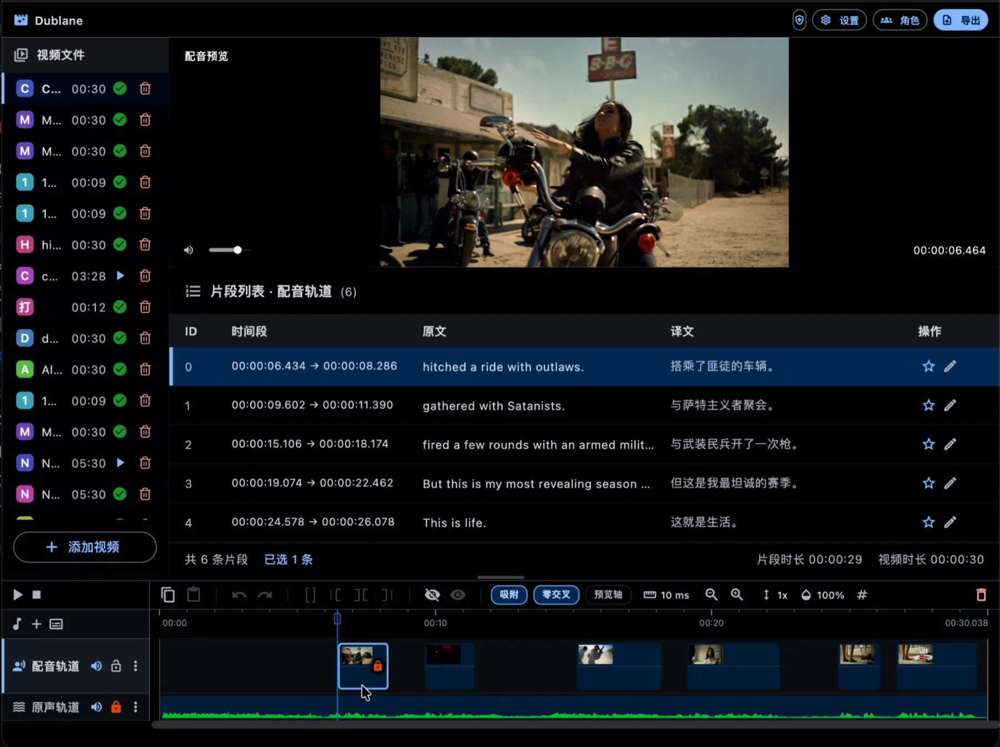

成品
同一段素材的两个状态：原片，和烧录了双语字幕的成品。
页面上的视频按网页加载做了压缩，分辨率与成片一致（1920 × 1080）。
换个语言看：英文页用的是同一段素材的韩语版 —— 同一个工程，只改目标语言，字幕和成品都会跟着变。
制作过程
六个步骤，从导入到导出，全部在 Dublane 主界面里完成。
1
导入视频
点左侧视频库下方的「添加视频」，选中这段 30 秒访谈。Dublane 原地读取文件，生成缩略图、波形和时长信息。
2
运行 AI 分析
点视频行右侧的播放图标，语言选 English、目标语言选中文，开始分析。提取音频、VAD 分段、语音识别、翻译四步自动跑完。
3
校对译文
片段表里逐条对照原文改译文。改一条只影响那一条，不需要重新识别，也不用重新生成配音。
4
确认字幕轨道
时间线轨道区里的字幕轨就是这次的字幕来源，片段表里显示的就是它。想换一套文案，换一条字幕轨即可。
5
在导出窗口设置字幕
打开「导出 → 字幕」，选字幕轨道、双语顺序「译文在上」，再调位置、边距和字号。预览帧按输出分辨率渲染，所见即所得。
6
导出成品
输出类型选「视频」，字幕选「烧录进画面」。需要单独的字幕文件时，同一窗口也能导出 SRT / ASS。

字幕怎么设
字幕内容来自片段表，样式和输出方式在导出窗口里调。
- 内容来源：原文、译文，或两者同时显示；本案例用双语，顺序是「译文在上、原文在下」
- 位置与边距：底部居中，左右边距 5%，垂直边距 4.5%，长句也不会顶到画面边缘
- 字号：主语言与第二语言分别设字号；本例第二语言 100%，两种文字视觉重量一致
- 字体：可选内置字体，也可以在导出窗口点「添加字体」导入自己的 TTF / OTF / TTC
- 输出方式：烧录进画面、导出单独的 SRT / ASS，或两者都要
- 改一句只重导：调一条译文不会影响其他片段，也不需要重新识别或重新配音
设置会跟着工程走：字幕轨道、双语顺序、字体和边距都保存在项目里，下次打开还是同一套，不用担心重新调一遍。
可复用场景
只要能拿到「原声」，识别、翻译和字幕这几步都可以交给 Dublane。
外语访谈
课程与讲座
产品演示
展会与发布会
跨境宣传片
纪录片片段
无障碍字幕版
一条通用规律：识别负责把话说清楚，翻译负责换个语言，校对负责让它像人话。三步分开之后，改哪一步都不用从头再来。